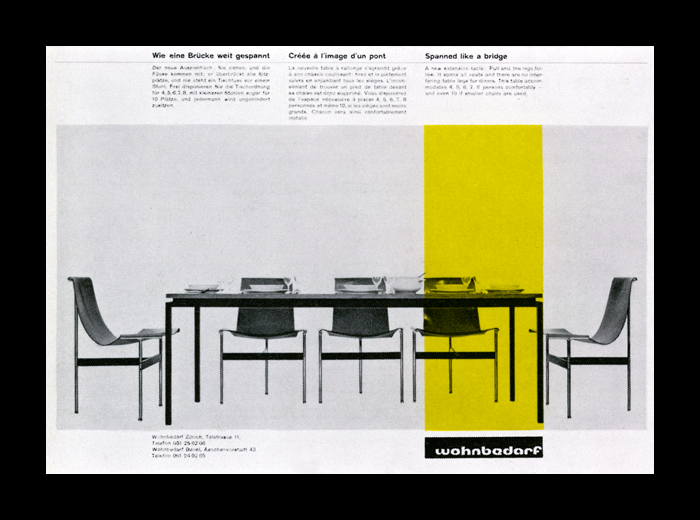

Image by Maryellen McFadden
Matthew Anderson
The older my eyes get, the harder it is to find surprises. But the work of Richard Paul Lohse has been a reminder of the joy that can come from seeking out those surprises. The basis for this theme, an advertisement by Lohse for Wohnbedarf, around 1965, is a design I’d never set eyes on, until recently. Despite it’s bare structure, the image has a strong visual impact, and I was amazed I’d never seen this before. It strikes me as the perfect foundation for an online experience. Translating the design from a flat and static medium to an interactive and layered one has been a challenge. Slight liberties have been taken in order to make that experience more enjoyable, but all in all, I hope that it pays due homage to the roots of graphic design, and especially Lohse, an under-appreciated master.
— Preview/ Download
Image by Het Geheugen van Nederland/Koninklijke Bibliotheek
Robert O’Rourke
The theme is based on one of Wim Crouwel’s posters for the Stedelijk Museum in Amsterdam. While it is not one of his more famous posters I felt it lent itself well to being translated into a usable WordPress theme and I loved the visual impact of the rotated text. The act of deconstructing the design was quite revealing as to the attention to detail that goes into something that looks so simple. The site title is used for the rotated text (generated automatically using javascript and CSS3 transformations). I adapted the design a little for the inner pages to support larger passages of text by moving the title into a single column.
— Preview / Download the theme
Lawrence Brown
Looking at Josef Müller-Brockmann’s Tonhalle Quartett poster, I felt I needed create a theme from it. After sketching out variations of browser window sizes, I thought how they would crop content – those with smaller screens would be presented with the circles leading them down the page; medium sized screens are treated to a slice of the header text and larger screens get the first few lines of the paragraph text. Layering techniques are emulated using RGBA colour values and composition is presented using JQuery and absolute positioning. The theme only uses a header, body text and an next item link.
— Preview / Download

Image by Blanka
Antony Kitson
My theme “1967″ is based on the Swiss Modernist poster “Juni Festwochen Zurich – 1967″ by Josef Müller–Brockmann.
Müller–Brockmann’s work has always been an inspiration, so when invited to produce a theme based on a 60′s Swiss poster Müller–Brockmann immediately sprang to mind. The aim of the theme was to replicate the vintage print feel of the poster using HTML & CSS aiming to emphasis the gap between print and screen. The biggest challenge was to reproduce the blue diagonal line, and retain the print overlay feel. This was achieved using the Absolute positioning and z-index CSS property. In keeping with the minimal theme the template is designed to dynamically display the latest 3 posts from wordpress.
— Preview / Download the theme

Image by Maryellen McFadden
Greg Ponchak
Neue Grafik, the publication, was designed with a strong sense of hierarchy. For that reason, I was compelled to use it as the driving force of this design.
The title, subtitle, and recent posts (which fade in and out) perfectly took the place where of the original title. The posts automatically divide into three columns to sync with the original design. I wanted to integrate images and videos seamlessly, which are placed into the posts are now automatically resized.
— Preview / Download the theme